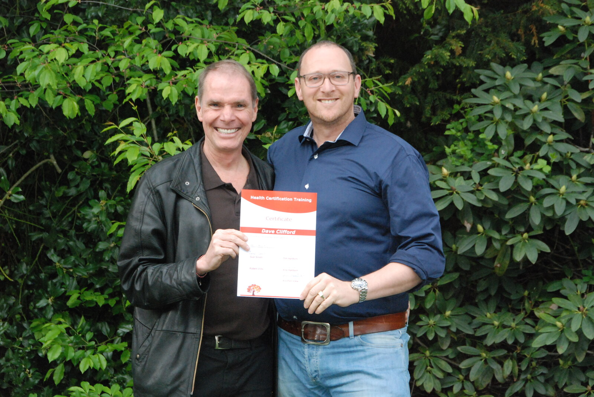
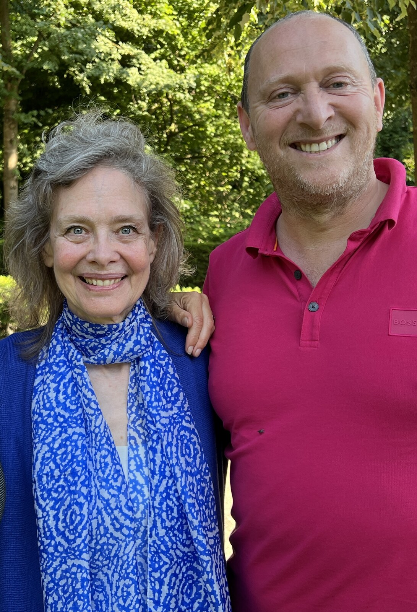
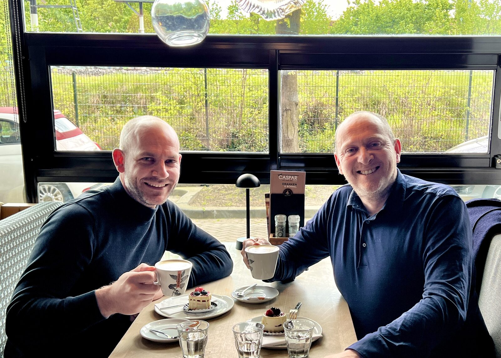

Robert Dilts
NLP · Success Factor Modeling
Internationaal grondlegger van NLP. Barcelona, 2017.
Al ruim 20 jaar begeleidt Dave Clifford directeuren, ondernemers en senior managers bij het maken van heldere keuzes, het versterken van hun leiderschap en het realiseren van duurzame resultaten. Wat klanten meestal benoemen is: meer rust, meer focus en opnieuw plezier in hun werk. Hij coacht en traint in het Nederlands en Engels en werkt vanuit Arnhem voor leiders in onder meer Nijmegen, Apeldoorn, Utrecht en Den Bosch.

Of je komt voor een-op-een coaching of voor een groepstraining. Elke route begint met echt zien wat er speelt en eindigt met blijvende verandering.
Voor directeuren, ondernemers en senior managers die hun impact, besluitvaardigheid en stakeholdermanagement naar een hoger niveau willen tillen.
Lees meer over Executive Coaching →Opnieuw kiezen, scherper positioneren, of een volgende stap zetten. Met rust en richting in plaats van onrust en haast.
Lees meer over Loopbaan & Positionering →Als werk en leven uit verhouding zijn. Begeleiding bij stress en burn-out en bouwen aan een leven met grenzen, energie en richting.
Lees meer over Herstel & Balans →Voor leidinggevenden in de dagelijkse praktijk. Betere gesprekken, scherpere feedback, situationeel sturen. Direct toepasbaar.
Lees meer over Praktisch Leidinggeven →Verandering vraagt om ander leiderschap. Hoe breng je jouw team mee, ook als de koers onzeker is of de weerstand groeit?
Lees meer over Verandering & Groei →Jouw eigen kompas scherp krijgen, vanuit Persoonlijke Kracht. Leiden vanuit wie je bent, niet vanuit wat er van je gevraagd wordt.
Lees meer over Persoonlijk Leiderschap →
Internationaal grondlegger van NLP. Barcelona, 2017.

Identiteitswerk en transformatie. Niveau I-III, 2024.

Mental space psychology op directieniveau. Sinds 2007.

Eerst luisteren. Dan kijken of het klikt. Pas dan een voorstel.
Goede coaching begint bij luisteren. In een eerste gesprek kijken we samen wat er speelt, zakelijk of persoonlijk. We onderzoeken of een traject met mij past bij wat jij nodig hebt. Dat oordeel komt aan twee kanten.
Klopt het, dan stel ik een traject op maat voor.
Plan een gesprek →Ik heb het genoegen gehad meerdere leiderschapstrainingen bij Dave te volgen binnen de Oostendorp Groep. Dave weet de juiste balans te vinden tussen structuur en flexibiliteit. Wat hem echt sterk maakt, is zijn vermogen om niet alleen op groepsniveau te trainen, maar juist ook op individueel niveau de verdieping op te zoeken. Onder zijn begeleiding zien we medewerkers zichtbaar groeien, met name op communicatie en samenwerking. Een echte professional die leiderschap niet alleen onderwijst, maar ook weet te ontwikkelen bij anderen.
The mountain is flat.Vanuit nieuwsgierigheid wat een ontwikkeltraject bij mij zou opleveren, kwam ik bij Dave terecht. Het enthousiasme en de positieve energie van Dave is zeer aanstekelijk. Wij hebben samen het plezier weer teruggevonden in mijn werk. Met een goede blauwdruk van wat voor mij echt belangrijk is, kan ik nu veel gemakkelijker keuzes maken en sta daardoor sterker in mijn schoenen.
Het coachingstraject met Dave was een echte eyeopener. Vanaf het eerste gesprek konden we meteen de diepte in. De sessies waren verfrissend en uitdagend, waardoor ik zowel privé als zakelijk grote stappen heb gezet. Dave is doortastend, motiverend en to the point.
Dave Clifford is a brilliant executive coach. His methodology, strategies and tools are very useful, not only for business but also for different situations you may face in life. I am extremely grateful for his help and support to go through different challenges, not only for surviving them but for succeeding in a way that I had never expected. I highly recommend you take the opportunity to be coached by Dave: it will change your life for the better.
Erg goede en duidelijke sparringpartner. Geeft je kennis en vaardigheden om ze daarna toe te passen in de praktijk. Komt erop terug en gaat indien nodig met je naar het next level. Vooral de nazorg voegt veel toe. Veel trainingen worden snel vergeten omdat er geen herhaling is. Daarnaast is Dave een prettige vent om mee te werken.
Dave's coaching is open, eerlijk, enthousiast en energiek. Hij heeft me geholpen weer met beide benen op de grond te staan en mij de focus te geven waar ik naar op zoek was. Dave weet het beste in iedereen naar boven te halen.
One of the strengths of Dave is to immediately create an atmosphere in which you as a client will confide in him. He manages to reach the core of your issues and has a talent to convince you to take steps in the right direction. I highly recommend Dave if you are in need of inspiration and motivation.
De training van Dave heb ik als zeer waardevol en inspirerend ervaren. Je krijgt tools aangereikt die je meteen in de praktijk kan toepassen. Het heeft meer inzicht gegeven in mijn teamleden en hoe je een nog betere leider voor hun kan zijn.
Dave is een coach die vanuit verbinding en goed luisteren echt tot de kern weet te komen. Hij heeft mij op persoonlijk vlak geholpen om aangeleerde overtuigingen en gedrag te buigen. De woorden “doe maar net alsof het kan” zullen mij bijblijven, waarmee hij mij hielp over de drempel te stappen om de juiste technieken toe te laten. Dave heeft mij altijd het gevoel gegeven dat hij voor mij klaarstond en mij oprecht verder wilde helpen.
Een eerste gesprek geeft helderheid, over wat er speelt en of een traject met mij daarbij past.
Plan een gesprek →